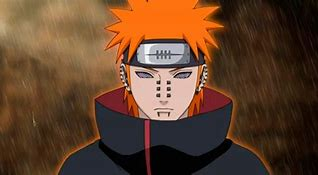
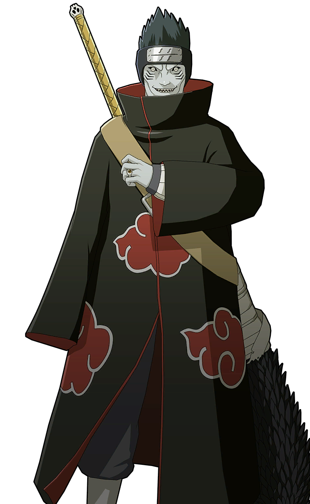
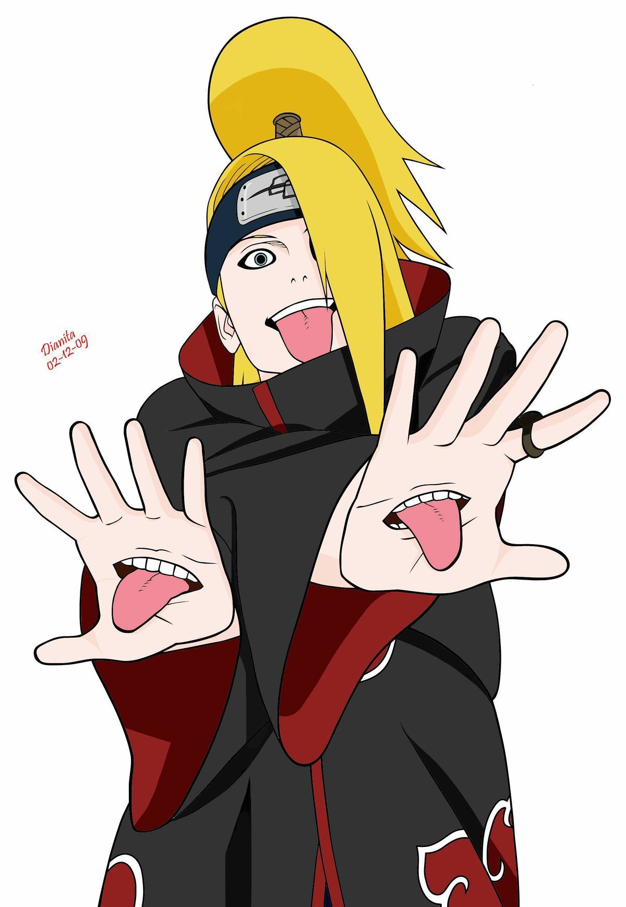
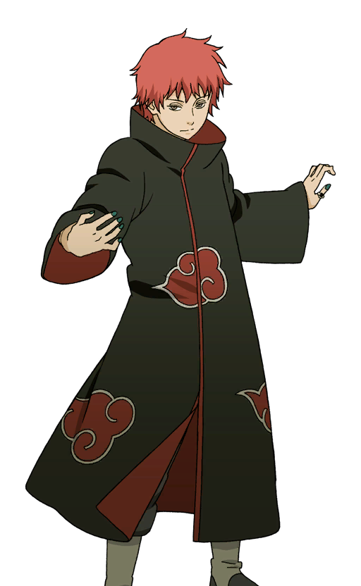

Itachi Uchiha
Itachi fue uno de los primeros miembros de Akatsuki. A pesar de su aparente traición a su aldea, Itachi tenía sus razones. Era un maestro en el uso del Sharingan y poseía el Mangekyo Sharingan.
Su habilidad principal era el Susanoo.
Pain
 Pain es el líder de Akatsuki después de la muerte de Yahiko. Su verdadero nombre es Nagato, y es conocido por su habilidad en el uso del Rinnegan.
Pain tiene la capacidad de controlar seis cuerpos diferentes simultáneamente y usar diversas técnicas poderosas.
Kisame Hoshigaki
 Kisame, apodado "El Monstruo de la Niebla", es conocido por su apariencia de tiburón. Era compañero de Itachi
Kisame tenía la capacidad de controlar el chakra de su espada
Deidara
 Deidara era un artista explosivo que utilizaba arcilla para crear bombas vivientes. Él era conocido por su lema "¡Arte es una explosión!".
Su brazo izquierdo estaba reemplazado por una prótesis que almacenaba arcilla explosiva.
Sasori
 Sasori era un maestro titiritero y había transformado su propio cuerpo en una marioneta.
Utilizaba títeres con habilidades letales y era conocido por su capacidad para convertir personas en marionetas.